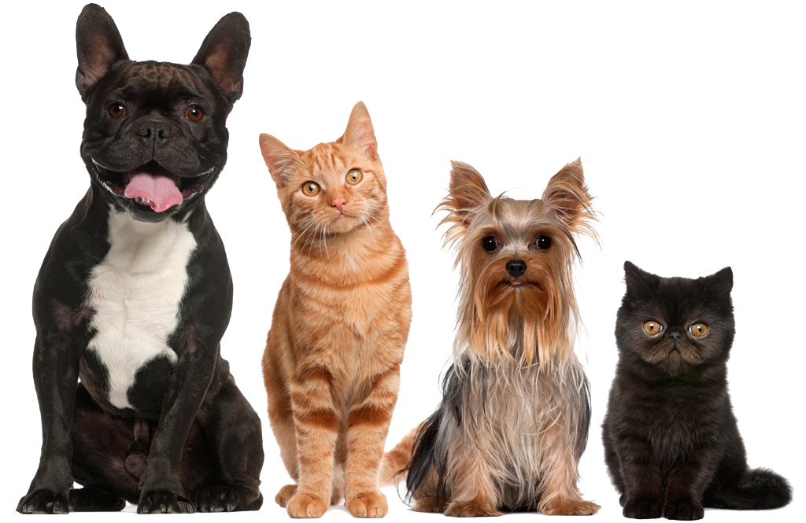

Adopta un nuevo amigo
Existen muchas y buenas razones, por las cuales adoptar a un amigo sea perro, perra, gato o gata nos beneficia en nuestra vida. Pues el amigo mas fiel es la mascota que nos acompaña y siempre esta ahi para que lo acaricies y nunca te sientas solo. Por eso la Fundacion Patitas de corazon quiere que apoyes la causa de adoptar y no comprar, es una oportunidad para ti y una segunda para ell@s.
